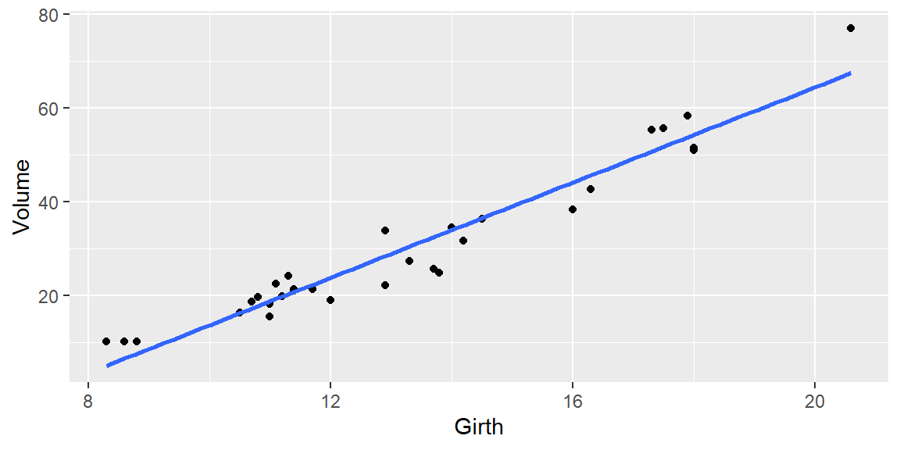

“I try not to get involved in the business of prediction. It’s a quick way to look like an idiot.” - Warren Ellis
After fitting a simple linear regression model and assessing the model’s usefulness, we can use the fitted model for two closely related purposes:
estimating the mean response at a particular value of \(x\), and
predicting one individual response at a particular value of \(x\).
These two goals sound similar, but they require different intervals.
6.1 Using the Model for Estimation and Prediction
Suppose we have fit the model \[
y=\beta_0+\beta_1x+\varepsilon.
\]
Recall that the mean of \(y\) for a particular value \(x_h\) is the population regression line evaluated at \(x_h\): \[\begin{align*}
E(y_h)=\beta_0+\beta_1x_h.
\end{align*}\]
Since \(\beta_0\) and \(\beta_1\) are unknown, we estimate this mean response with \[\begin{align*}
\hat{y}_h=b_0+b_1x_h.
\end{align*}\]
We say \(\hat y_h\) is a point estimator for the population mean response \(\beta_0+\beta_1x_h\).
ExampleExample 6.1: Mean response versus individual response
Suppose \(x\) is hours studied and \(y\) is exam score. If \(x_h=10\), there are two different questions we might ask:
Mean response question: What is the mean exam score for all students who study 10 hours?
Prediction question: What exam score will one particular student earn if they study 10 hours?
The first question is about the average outcome for a group of similar individuals. The second question is about one individual outcome.
The same fitted value \(\hat y_h\) is used as the center for both intervals, but the prediction interval is wider because one individual response includes extra random variation around the mean.
NoteSame center, different uncertainty
Both a confidence interval for the mean response and a prediction interval for one individual response are centered at \(\hat y_h\).
The difference is the amount of uncertainty:
Goal
Quantity
Interval type
Estimate the average response at \(x_h\)
\(\beta_0+\beta_1x_h\)
Confidence interval
Predict one new response at \(x_h\)
\(y_h\)
Prediction interval
The prediction interval is wider because an individual response varies around the mean response.
6.1.1 The Sampling Distribution of \(\hat{y}_h\)
We want to make an inference for the population mean response at some value of the predictor variable. We denote that value by \(x_h\).
We have the point estimator \(\hat y_h\). To build a confidence interval for the mean response, we need the sampling distribution of \(\hat y_h\).
6.1.2 Linear Combination of the Observed Responses
Using the least squares formulas from chapter 03, \[\begin{align*}
b_0 &= \sum c_iy_i,\\
b_1 &= \sum k_iy_i.
\end{align*}\]
Thus, \(\hat y_h\) is a linear combination of the observed response values \(y_i\). Since the \(y_i\) values are normally distributed under the model assumptions, Theorem 4.2 implies that \(\hat y_h\) is also normally distributed.
6.1.3 The Mean of \(\hat{y}_h\)
The expected value of \(\hat y_h\) is \[\begin{align*}
E(\hat y_h)
&=E\left[\sum (c_i+x_hk_i)y_i\right]\\
&=\sum (c_i+x_hk_i)E(y_i)\\
&=\sum (c_i+x_hk_i)(\beta_0+\beta_1x_i)\\
&=\beta_0\left(\sum c_i+x_h\sum k_i\right)
+\beta_1\left(\sum c_ix_i+x_h\sum k_ix_i\right)\\
&=\beta_0(1+x_h\cdot 0)+\beta_1(0+x_h\cdot 1)\\
&=\beta_0+\beta_1x_h.
\end{align*}\]
Therefore, \(\hat y_h\) is an unbiased estimator of the mean response at \(x_h\).
6.1.4 The Variance of \(\hat{y}_h\)
The variance of \(\hat y_h\) is \[\begin{align*}
Var(\hat y_h)
&=\sigma^2\left(\frac{1}{n}+\frac{(x_h-\bar{x})^2}{\sum (x_i-\bar{x})^2}\right).
\end{align*}\]
So the sampling distribution of \(\hat y_h\) is \[
\begin{align}
\hat y_h
&\sim N\left(
\beta_0+\beta_1x_h,\,
\sigma^2\left[\frac{1}{n}+\frac{(x_h-\bar{x})^2}{\sum (x_i-\bar{x})^2}\right]
\right).
\end{align}
\tag{6.1}\]
We estimate \(\sigma^2\) with \(s^2\), so the confidence interval uses a \(t\) critical value.
6.1.5 Confidence Interval for the Mean Response
A \((1-\alpha)100\%\) confidence interval for the mean response at \(x_h\) is \[
\begin{align}
\hat y_h
\pm
t_{\alpha/2}
\sqrt{
s^2\left(
\frac{1}{n}
+\frac{(x_h-\bar{x})^2}{\sum (x_i-\bar{x})^2}
\right)
}.
\end{align}
\tag{6.2}\]
ExampleExample 6.2: Interval width near and far from the mean of x
The confidence interval for the mean response is narrowest near \(\bar{x}\) and wider farther from \(\bar{x}\). We can see this in the trees data by plotting the half-width of the confidence interval across possible Girth values.
library(datasets)library(tidyverse)fit<-lm(Volume~Girth, data =trees)girth_grid<-tibble( Girth =seq(min(trees$Girth), max(trees$Girth), length.out =100))ci_grid<-predict(fit, girth_grid, interval ="confidence", level =0.95)|>as_tibble()|>bind_cols(girth_grid)|>mutate(ci_half_width =(upr-lwr)/2)girth_mean<-mean(trees$Girth)ggplot(ci_grid, aes(x =Girth, y =ci_half_width))+geom_line(linewidth =1)+geom_vline(xintercept =girth_mean, color ="red", linetype ="dashed")+labs( x ="Girth", y ="Confidence interval half-width", subtitle ="The confidence interval is narrowest near the mean of the observed predictor values")

The dashed red line marks \(\bar{x}\). The further \(x_h\) moves away from \(\bar{x}\), the larger the term \((x_h-\bar{x})^2\) becomes, so the interval gets wider.
ExampleExample 6.3: Confidence interval for mean tree volume
Let’s return to the trees data from Example 5.2. Suppose we want to estimate the mean Volume for black cherry trees with Girth = 16.
The fitted value is 44.11. We are 95% confident that the mean volume for all black cherry trees with girth 16 inches is between 42.018 and 46.203 cubic feet, assuming the linear model is appropriate.
This interval estimates a population mean response. It is not trying to capture one individual tree.
6.2 Predicting the Response
Previously, we estimated the mean of all responses for a given value \(x_h\). Now suppose we want to predict one new response value for a single observation with predictor value \(x_h\).
We still use the fitted value \[\begin{align*}
\hat y_h=b_0+b_1x_h
\end{align*}\] as the point prediction, but the uncertainty is larger.
6.2.1 Prediction When the True Line is Known
If we knew the true regression line, then our best point predictor at \(x_h\) would be \[\begin{align*}
y_{h(pred)}=\beta_0+\beta_1x_h.
\end{align*}\]
The variance of an individual response around the true mean line is \[\begin{align*}
Var(y_h)=\sigma^2.
\end{align*}\]
If \(\sigma\) were known, we could describe how far an individual response is likely to fall from the true mean line using \(z_{\alpha/2}\sigma\).
If \(\sigma\) were unknown, we would estimate it with \(s\) and use a \(t\) critical value.
6.2.2 Prediction When the True Line is Unknown
In practice, we do not know the true regression line. We estimate it first, then predict with \[\begin{align*}
\hat y_h=b_0+b_1x_h.
\end{align*}\]
6.2.3 The Variance of the Predicted Response
For an individual prediction, there are two sources of uncertainty:
uncertainty from estimating the mean response, and
random variation of an individual response around that mean.
From Equation 6.1, the variance of the fitted mean response is \[\begin{align*}
Var(\hat y_h)
&=\sigma^2\left(\frac{1}{n}+\frac{(x_h-\bar{x})^2}{\sum (x_i-\bar{x})^2}\right).
\end{align*}\]
The variance of an individual response around the mean is \[\begin{align*}
\sigma^2.
\end{align*}\]
So the variance for predicting one individual response is \[\begin{align*}
Var(y_{h(pred)})
&=\sigma^2+
\sigma^2\left(\frac{1}{n}+\frac{(x_h-\bar{x})^2}{\sum (x_i-\bar{x})^2}\right)\\
&=\sigma^2\left(1+\frac{1}{n}+\frac{(x_h-\bar{x})^2}{\sum (x_i-\bar{x})^2}\right).
\end{align*}\]
NoteWhy prediction intervals are wider
The confidence interval for the mean response only accounts for uncertainty in estimating the regression line.
The prediction interval accounts for that same uncertainty plus the natural variability of one individual response around the regression line. This extra source of variation is the 1 inside the prediction interval formula.
WarningIntervals depend on the regression assumptions
Confidence intervals and prediction intervals are model-based. They are only reliable if the regression model is a reasonable description of the data.
Before trusting these intervals, we should check whether the linearity, independence, constant variance, and normality assumptions are reasonable. A beautifully calculated interval can still be misleading if the model assumptions are badly violated.
6.2.4 Prediction Interval
Since \(y\) is normally distributed under the model assumptions, a \((1-\alpha)100\%\) prediction interval for one response at \(x_h\) is \[
\begin{align}
\hat y_h
\pm
t_{\alpha/2}
\sqrt{
s^2\left(
1+\frac{1}{n}
+\frac{(x_h-\bar{x})^2}{\sum (x_i-\bar{x})^2}
\right)
}.
\end{align}
\tag{6.3}\]
ExampleExample 6.4: Prediction interval for one tree
Now suppose we want to predict the Volume of one individual black cherry tree with Girth = 16.
The shaded region from geom_smooth() shows pointwise confidence intervals for the mean response across many values of Girth. The red dashed lines show prediction intervals for individual tree volumes. The prediction intervals are wider because they include individual response variation.
NotePointwise confidence interval versus confidence band
A pointwise confidence interval estimates the mean response at one specific value \(x_h\).
A confidence band is stronger: it is designed to cover the entire mean response line over a range of \(x\) values with a specified confidence level.
The shaded region produced by geom_smooth() is best interpreted as a collection of pointwise confidence intervals, not as a simultaneous confidence band for the whole regression line.
6.2.5 Extrapolation and Precision
When using the least squares prediction equation to estimate the mean value of \(y\) or to predict a particular value of \(y\) for values of \(x\) outside the range of the sample data, you may encounter much larger errors than expected. This practice is known as extrapolation.
Even if the least squares model fits the data well within the observed range of \(x\) values, it may poorly represent the true relationship outside that range.
ExampleExample 6.6: Why extrapolation can be risky
In the trees data, the observed Girth values range from 8.3 to 20.6 inches.
Predicting the volume of a tree with Girth = 16 is interpolation because 16 is inside the observed range.
Predicting the volume of a tree with Girth = 35 would be extrapolation because 35 is far outside the observed range. Even if the fitted line describes the observed trees well, we do not know whether the same linear pattern continues for trees that large.
As the sample size \(n\) increases, the width of a confidence interval for the mean response decreases. In theory, we can estimate the mean response as precisely as desired for a fixed value of \(x_h\) by selecting a large enough sample.
Prediction intervals for individual responses also become narrower as \(n\) increases, but they have a natural lower limit because an individual response still varies around the mean. Even with an extremely large sample, the prediction interval cannot shrink below the variation caused by the error term unless \(\sigma\) is reduced.
To make more accurate predictions for new individual responses, we must improve the model. Possible improvements include using a more appropriate functional form, adding useful predictor variables, or reducing measurement error.
ExampleExample 6.7: Which interval should I use?
Use the question being asked to decide which interval is appropriate.
Scenario
Use this interval
Reason
Estimate the average tree volume for all trees with Girth = 16.
Confidence interval for the mean response
The question asks about an average for a population of similar trees.
Predict the volume of one newly measured tree with Girth = 16.
Prediction interval
The question asks about one individual tree.
Estimate the average house price for all 2000-square-foot homes in a city.
Confidence interval for the mean response
The question asks about a mean price for a group of homes.
Predict the sale price of one particular 2000-square-foot home.
Prediction interval
The question asks about one individual home, which can vary around the mean.
Describe the fitted mean response over a range of \(x\) values.
Pointwise confidence intervals or a confidence band
Pointwise intervals describe individual \(x_h\) values; a confidence band describes the whole fitted mean curve over a range.
The quick rule: use a confidence interval for an average response, and use a prediction interval for one individual response.
6.3 Recap
This chapter distinguished estimation of a mean response from prediction of one individual response.
Idea
Meaning
Mean response at \(x_h\)
The average value of \(y\) for all observations with predictor value \(x_h\).
Point estimator
The fitted value \(\hat y_h=b_0+b_1x_h\).
Confidence interval for mean response
An interval estimating \(\beta_0+\beta_1x_h\).
Pointwise confidence interval
A confidence interval for the mean response at one specific value of \(x_h\).
Confidence band
An interval band intended to cover the mean response line over a range of \(x\) values.
Prediction interval
An interval for one individual response at \(x_h\).
Why prediction intervals are wider
They include uncertainty in the fitted mean plus individual random error.
Extrapolation
Using the fitted model outside the range of observed \(x\) values.
Model assumptions
The interval formulas depend on the regression assumptions being reasonable.
Precision
Confidence intervals can shrink substantially with larger \(n\); prediction intervals have a lower limit due to random individual variation.
6.4 Check your understanding
NoteProblems
What is the difference between estimating a mean response and predicting one individual response?
Why are the confidence interval and prediction interval centered at the same fitted value \(\hat y_h\)?
Why is a prediction interval wider than a confidence interval for the mean response at the same \(x_h\)?
In the confidence interval formula, why does the interval become wider when \(x_h\) is far from \(\bar{x}\)?
What is extrapolation, and why can it be dangerous?
Why can increasing the sample size make confidence intervals for the mean response very narrow, but not make prediction intervals shrink to zero width?
Suppose a model predicts mean house price from square footage. Which interval would you use to estimate the average price of all 2000-square-foot homes? Which interval would you use to predict the price of one particular 2000-square-foot home?
What model assumption is especially important when using these intervals to make probability-based statements?
What is the difference between a pointwise confidence interval and a confidence band?
Why should we check model assumptions before trusting confidence intervals and prediction intervals?
TipSolutions
Mean versus individual. Estimating a mean response asks about the average value of \(y\) for all observations with a given \(x_h\). Predicting an individual response asks about one new observation with that value of \(x_h\).
Same best point estimate. In both cases, the fitted line gives the best point estimate at \(x_h\), so both intervals are centered at \(\hat y_h=b_0+b_1x_h\).
Extra individual variation. A confidence interval only accounts for uncertainty in estimating the mean response. A prediction interval also includes the random variation of one individual response around the mean, so it is wider.
Less information far from the center. The term \((x_h-\bar{x})^2\) grows as \(x_h\) moves farther from the center of the observed predictor values. The fitted line is estimated most precisely near \(\bar{x}\) and less precisely farther away.
Predicting outside the data range. Extrapolation means using the fitted model for \(x\) values outside the observed range. It is risky because the relationship may change outside the range where we actually collected data.
Individual randomness remains. Larger samples help us estimate the mean response more precisely, but an individual response still has random error around the mean. That individual-level variation prevents prediction intervals from shrinking to zero.
Use different intervals for different goals. To estimate the average price of all 2000-square-foot homes, use a confidence interval for the mean response. To predict the price of one particular 2000-square-foot home, use a prediction interval.
Normality and the full regression model assumptions matter. The formulas rely on the regression assumptions, including linear mean structure, independent errors, constant variance, and normal errors for exact \(t\)-based intervals.
One value versus a range. A pointwise confidence interval estimates the mean response at one specific value of \(x_h\). A confidence band is intended to cover the mean response line over a range of \(x\) values with a specified confidence level.
Intervals inherit model problems. Confidence intervals and prediction intervals are calculated from the fitted regression model. If the model has serious problems, such as nonlinearity, nonconstant variance, dependent errors, or strongly non-normal errors, then the interval may not have the reliability its confidence level suggests.